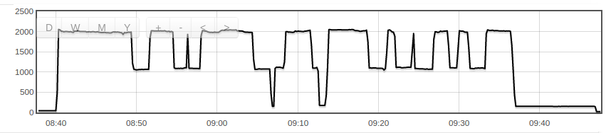
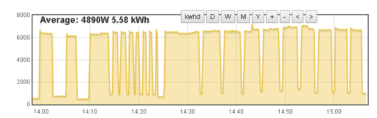

I'm looking at monitoring individual circuits in my house...building a custom solution. The 120V circuits are easy enough...measure the voltage and current and do the typical math.
Where I am questioning myself is on the 240V circuits... is it as simple as measuring the current/voltage on each individual phase and then adding the power of the two together? I notice there is a red and black wire on each of the 240V breakers...does that really mean anything?
Re: US 240V circuits
If your 240 V load is fed by a two-wire system (i.e. there is no neutral connection), then you only need 1 ct. If you're using the voltage of one leg - neutral, you use that and double the power you read. If you're measuring the full 240 V, obviously you use that for the power calculation.
Re: US 240V circuits
Thanks for responding Robert. Probably a dumb question...but how do I tell if a neutral is being used? Lets use for example the Clothes dryer...some internet searching shows that most are connected with 2 hot wires and a neutral. Does that mean that I should sample across both hot wires and add them together? They are close enough on the panel that I could clamp a CT around both wires easy enough...and if I understood you correctly, use the 120V voltage measurement and double it to get the voltage to figure out the power. Or are you saying that the voltage usage is going to be symetrical and I really only need to measure one leg and double it because the draw will be the same across the two legs since it is 240V?
Re: US 240V circuits
"how do I tell if a neutral is being used? " You'll have to do a bit of digging, as a last resort you'll need to open it up and trace the wiring. If there's a third wire (neutral) then it could be that it has pairs of 120 V elements inside and to be sure you must assume that there is a neutral current and you need two CTs to get the total power. Or you could do as Fig. 3c. in EmonTx - Use in North America.
The underlying assumption is that the voltages on the two legs are identical, so if you're looking to measure a 240 V load (no neutral) you either measure the current once and the voltage on one leg and double the product and call it power; or you measure current twice and the voltage on one leg and the power is the product; or you measure the voltage between both legs and one current, and the power is the product as always. What you must not do is measure both currents and double the voltage.
Re: US 240V circuits
If the label on the dryer says 240 Volts/30 Amps, then your dryer uses the two hot legs to power the heating elements. The neutral is used in conjunction with one hot leg to give 120 Volts to power the lamp inside the drum housing, timer motor, electronics (if any) etc..
Re: US 240V circuits
I think the drum motor is always connected between one leg and neutral isn't it? i.e. I think they all use 120V motors.
Re: US 240V circuits
Yes, quite right. (I remembered the timer motor, but forgot about the drum!) It's just the heating elements that are powered by 240V.
Re: US 240V circuits
So I think you'll always need 2 CTs to correctly monitor a US dryer (or you do the clever threading trick with the two legs through the one CT).
Re: US 240V circuits
True. I look at it from the angle that the heating element load dwarfs the motor (and ancillary items) portion of the load such that the smaller load is essentially insignificant. But you're right, if the total load is to be take into account, then 2 CTs will be needed.
Re: US 240V circuits
EmonTx - Use in North America: The section about individual loads is getting its diagrams drawn...
Re: US 240V circuits
Yeh, I reckon you could potentially get away with ignoring the electronics and the timer motor, but the drum motor is getting a bit hefty to ignore. My dryer sucks about 130W in "airing" mode (and cool-down mode). I guess you could calibrate it away, but the drum motor runs constantly while the heating element comes and goes as required by the thermostat, so it all gets a big ugly.
Re: US 240V circuits
I figured 130W compared to 6.7kW was so small, it wasn't going to make enough of a difference to be concerned with. We did a load of drying today. The dryer ran for an hour, so the 130W motor (going on the premise mine is similar to yours) ate about an eighth of a kWh, whereas the total consumption was a bit over 5 kWh.
With that ratio, for me, its "ignorable."
Re: US 240V circuits
compared to 6.7kW
Wow, yours is much beefier than mine. How many amps is a US 240V dry outlet good for? Mine is plugged into a standard 10A outlet (240V, 50Hz) and never goes above 2kW. Here's a typical cycle. That last 10 minutes or so is the cool-down period with just the drum motor running.

Re: US 240V circuits
A dryer outlet is usually rated at 30A, electric stove/oven at 40A. Both at 240V.
Here's my dryer :

Re: US 240V circuits
Robert, Thanks for the update...that helps alot!